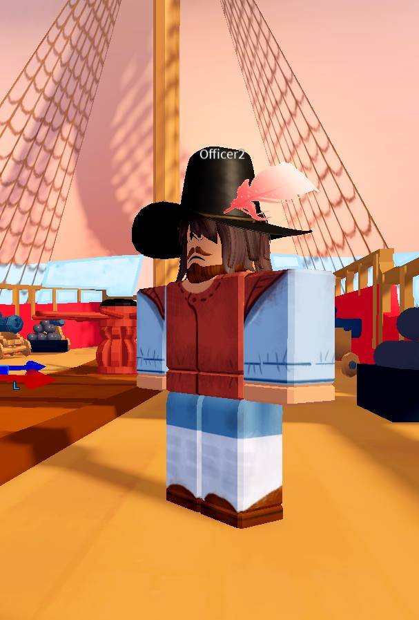
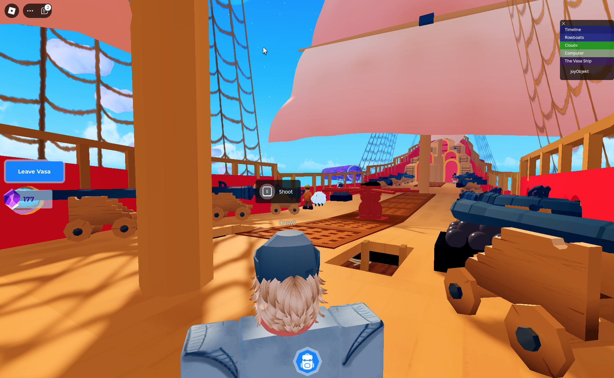
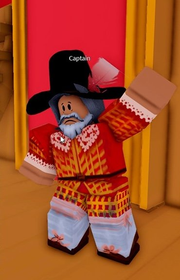
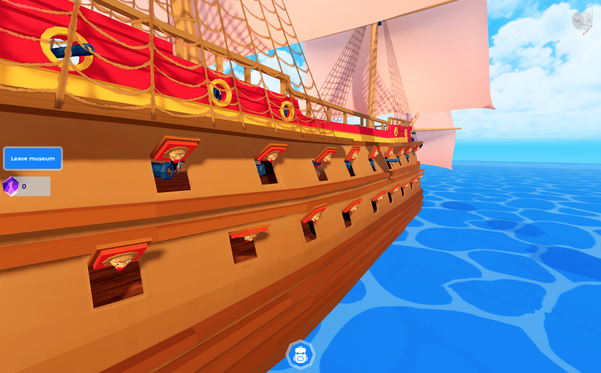

About
The Vasa, a mighty warship, is sinking! On August 10, 1628 in Stockholm, disaster struck as the ship heeled and took on water. With time running out, can you rescue the crew and passengers before it's too late? Players can access this mini game via our Mega Museum Portal. Enjoy!


Purpose of the game
The Vasa Ship game is designed to make history come alive for players of all ages. By combining engaging gameplay with educational content, players gain a deeper understanding of Swedish maritime history and the engineering challenges of the 17th century.
The game serves as a virtual extension of the Vasa Museum in Stockholm, allowing players worldwide to experience the story of the Vasa ship in an interactive and memorable way.
Learning Outcomes
Understand the story of the Vasa ship, from its construction to its sinking and eventual recovery. Learn about 17th-century Swedish society and the importance of naval power during that era.

